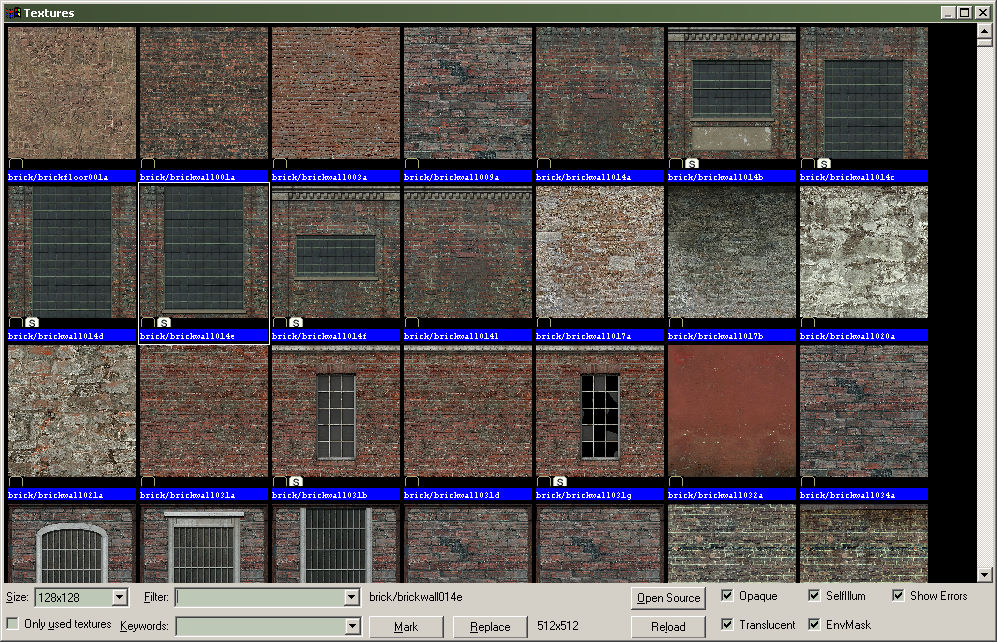

Dialogs: Texture Browser
The Texture Browser allows you to find and select materials to apply to objects.
Texture List
This window contains a list of the materials currently available. Double-clicking a material in the list selects it as the current material and close the Texture Browser.
Size
This scroll box allows you to set the displayed size of the textures. You can choose from 32x32, 64x64, 128x128, or 1:1 (full size).
Filter
This field allows you to type in a search string. Any texture that includes that string as part of its name will be displayed. You can specify more than one filter string. For example, if you specify the search string "sign 7," any texture with "sign" and "7" in its name will be displayed. Previous search strings can be accessed by clicking on the down arrow.
Only used textures
When selected, this sets the browser to display only those textures that have been used in your level. This helps you limit your use of different textures, and avoid using different textures for the same purpose. For games such as Half-Life, textures are stored in the compiled maps. Reducing the number of textures will decrease the compiled map size. Fewer textures to load also means memory savings while playing the map in the game.
Mark
This button allows you to Mark (select) all objects or faces that contain the selected material. You can then adjust those faces as required (textures, scaling, lightmap resolution, etc).
If the texture Browser was envoked in Face Edit mode, Mark will highlight individual faces that contain the selected material, as if you selected each face by hand. Outside of Face Edit mode, entire objects that contain the material will be selected.
Replace
Opens the Replace Textures dialog with the currently selected material already in the Find: field.
Open Source
Opens the .VMT file that was used to generate the material currently selected. The files is opened with the Windows application associated with text files.
Opaque, Translucent, SelfIllum, Envmask
Shows materials that contain these properties in their material definitions. Unchecking any other these options will hide any materials that have those properties.
Show Errors
Shows materials that contain errors in their material definitions.
Related Topics
© 2004 Valve Corporation. All rights reserved. Valve, the Valve logo, Half-Life, the Half-Life logo, the Lambda logo, Steam, the Steam logo, Team Fortress, the Team Fortress logo, Opposing Force, Day of Defeat, the Day of Defeat logo, Counter-Strike, the Counter-Strike logo, Source, the Source logo, Hammer and Counter-Strike: Condition Zero are trademarks and/or registered trademarks of Valve Corporation. Microsoft and Visual Studio are trademarks and/or registered trademarks of Microsoft Corporation. All other trademarks are property of their respective owners.